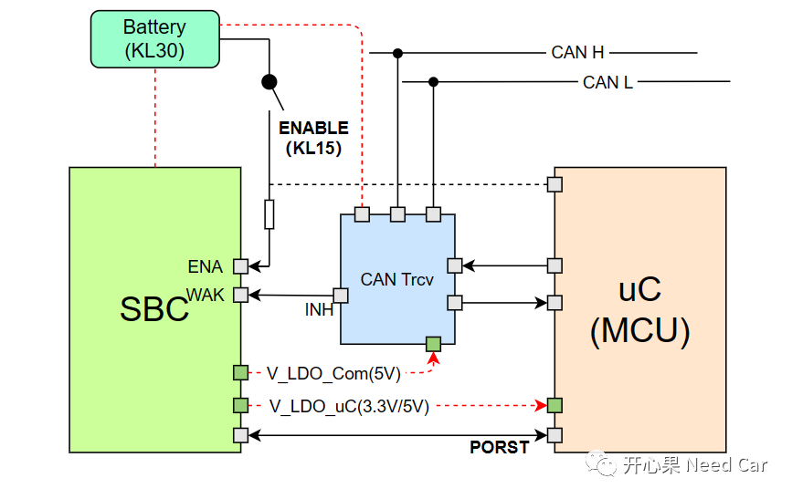
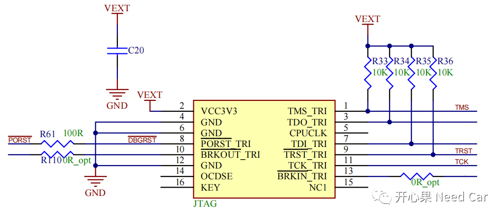
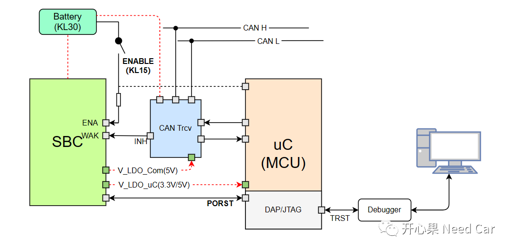

开心果 Need Car · 2023-03-28T19:44:00+08:00 · 微信原文
KL15和PORST Pin看似简单，仅仅是两个Pin，但是，如果不深刻地理解两个Pin变化的场景，有些工程问题，会很伤脑壳。本文，着重讨论一下KL15硬线和PORST Pin。
1、KL15硬线

这里提一个问题，如果KL15由高电平变为低电平，SBC和uC有何变化？
当KL15硬线电平由高->低时:
（一）uC所受影响
如果此时，uC的其他唤醒源均不再请求通信，uC会走下电流程（Shutdown）；
如果还有KL15以外的任一通信请求（eg：诊断请求、收到其他节点网络管理报文、上层应用通信请求等），uC状态保持不变，维持正常通信和工作状态。
（二）SBC所受影响
SBC所受影响，很大程度取决于uC的请求。
如果uC走下电流程，uC将会请求SBC进入休眠状态，即：切断uC等器件的工作电压；
如果uC维持在正常通信状态，SBC状态不受影响。
提示：如上图，uC仅仅获取KL15的电平信号，而不控制KL15电平变化。uC监控KL15电平变化，因为KL15状态是uC执行下电流程的条件之一。
2、PORST Pin
（二）SBC控制PORST Pin
SBC下拉PORST Pin的场景：
SBC对应的看门狗超时，即：uC没有按时喂狗（外狗）；
冷启动阶段等。
如上，可以看出，不管是SBC还是uC控制PORST Pin，均是为了两者的状态同步。但是，此期间，uC的供电稳定，并不受影响。除此之外，调试设备一般也与PORST Pin连接，即：复位操作时，调试设备也会相应的执行复位动作。JTAG (Joint Test Action Group)对应的电路设计，示意如下所示：

如上图，当SBC或者uC主动拉低PORST时，会使得JTAG或者DAP（Device Access Port）复位，也就是Debug Reset。
使用调试设备调试时，经常会进行复位调试，此时，调试设备会主动拉低TRST Pin（双向Pin），复位调试设备的同时，软件执行Debug Reset，拉低PORST Pin，使得SBC、uC等相关器件也复位，完成复位同步。示意如下所示：

往期精彩回顾
Bootloader开发：刷写时，被刷节点和非刷写节点行为有何不同？
Bootloader开发：为什么需要SBL（Secondary Bootloader）?
Autosar EcuM：APP由RUN到POST_RUN浅析